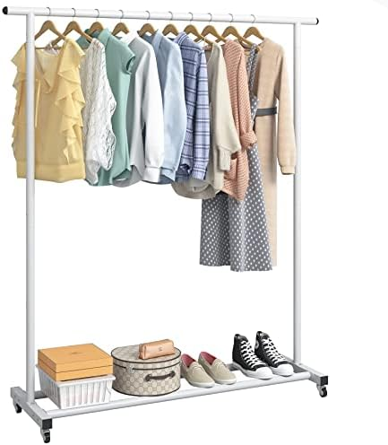
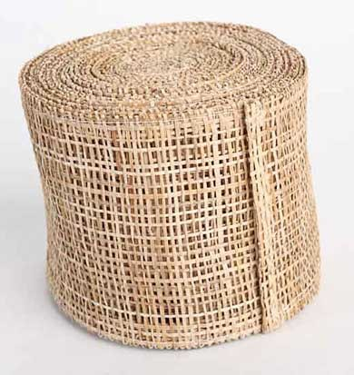
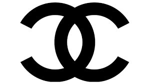
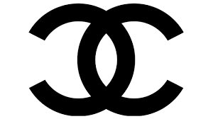

ویژگی های جنس پارچه های ما
الیاف پنبه ای هادی گرما هستند و حرارت بدن را دفع میکنند و از این جهت بسیار خنک اند و برای استفاده در فصول گرم سال، مناسب.
لباس نخی-پنبه به راحتی شسته و لکه گیری می شود.
لباس نخی به دلیل دفع رطوبت بدن، مانع رشد باکتری ها و قارچ های پوستی می شود.
جنس نرم و لطیف پارچه پنبه ای، خواب راحتی به شما عرضه می کند.
پوست را تحریک و اذیت نمیکنند و باعث خارش نمی شوند.
این جنس از پارچه آلرژی زا نیست. برای همین برای نوزادان، کودکان و افراد با جنس پوست حساس، این نوع از لباس پیشنهاد می شود.
با دوام و مقاوم در برابر شست و شو های پی در پی اند.
در برابر ساییدگی مقاوم اند.
هنگام شستشوی لباس، از آب سرد (زیر۳۰ درجه) استفاده کنید.
بعد از شستشو، لباس را کمی و به آهستگی کش بدهید تا به شکل اولیه خود برگردد.
برای خشک کردن این الیاف، بهتر است از دمای طبیعی و یا نور خورشید استفاده کنید.
اگر لباس نخی شما پس از شستشو با ماشین، دچار انقباض شد، شستن دوباره آن در آب سرد و با دست میتواند مفید باشد.
لباس های نخی پس از شستشو نیاز چندانی به اطو کشیدن ندارند؛ البته در حالی که پس از شستشو آنرا کمی بکشید و در برابر نور طبیعی خشک کنید.
بهتر است این جنس از الیاف را هنگامی که هنوز کمی رطوبت دارند، اطو کنید. اگرچه استفاده از اطو بخار هم کارساز است.
مطمئن شوید لباس نخی را حتما پس از خشک شدن به صورت کامل، تا کنید.
لباس را پشت و رو بشورید.لباس نخی سبک است و برای استفاده بعنوان لباس خواب و لباس ورزشی مناسب اند.

متاسفانه برخی از فروشندگان لباس های با الیاف مصنوعی را به جای الیاف طبیعی و پنبه ای، تحت عنوان لباس نخی میفروشند تا اگر شکایتی هم شد، دروغ نگفته باشند و بگویند: خب از نخ دوخته شده!
گرچه شناسایی جنس الیاف لباس بیشتر یک راه تجربی است. راه هایی برای تشخیص لباس های نخی-پنبه ای از سایر اجناس وجود دارد که با دانستن آنها قادر خواهید بود پوشاک مطلوب خود را به راحتی انتخاب کنید.
اگر باتجربه باشید، با دست کشیدن روی جنس پارچه میتوانید پی به این ببرید که پلاستیک است یا نخ یا هردو؛ در غیر این صورت میتوانید تکه ای از نخ لباس را (البته اگر اضافه بود، لازم به کندن نیست!) جدا کرده و بسوزانید. اگر دود سیاه بود و نخ در خود جمع شد، از الیاف مصنوعی است و اگر پودر شد و دود سفید داشت، آن لباس نخی خالص است.
امروز، دنیا بیشتر از هر وقت دیگری از پنبه که فیبر طبیعی است استفاده میکند و دلایل محکمی برای اینکارش دارد. کشت پنبه و به عمل آوری آن در یک تی شرت یا پیراهن، حتی به ما امکان استفاده از باقی گیاه پنبه برای تولید مواد غذایی و کاغذ را میدهد. تجدید پذیری منابع اصلی این پوشاک و کاربرد بهینه آن، به همراه دوام و راحتی اش، موجب شده تا لباس نخی-پنبه ای، طرفداران زیادی در تمام دنیا برای خودش دست و پا کند.


 
